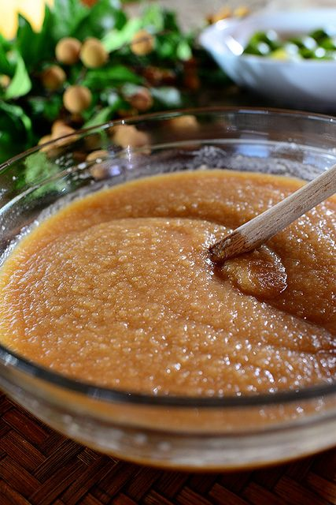
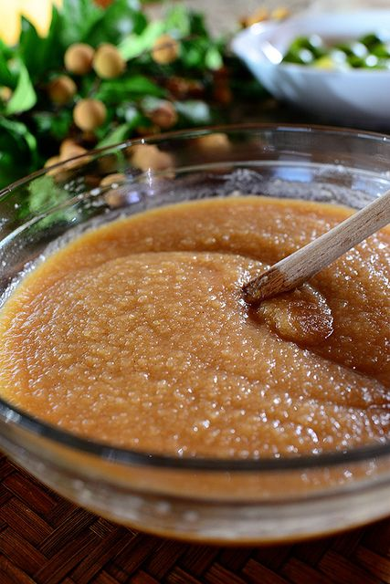

How to Make Applesauce
Step four:
Create applesauce by breaking up the apples either by hand with a fork, whisk, or emulsion blender, or transfer all the contents to a food processor or food mill to create a more even texture. Puree until it's the consistency you want.
 
